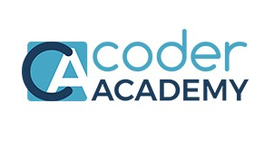

2019-2020

Currently Studying Full Stack Development at Coder Academy Melbourne. Technologies I am currently learning include HTML, CSS, Ruby on Rails & JavaScript MERN stack (Mongo.db, Express, ReactJS, Node.js)
I came to Melbourne from Southern California back in 2014 and have settled here in pursuit of good health and a great life. I love to live fearlessly. I am on a never-ending quest to be 'well-rounded.' I'm in cahoots with a wonderful human and two fur children. Checkout my site on desktop to see a snippet of my education and experience.
I came to Melbourne from Southern California back in 2014 and have settled here in pursuit of good health and a great life. I love to live fearlessly. I am on a never-ending quest to be 'well-rounded.' I'm in cahoots with a wonderful human and two fur children.
Please enjoy this nifty snippet of my experience and education journey.